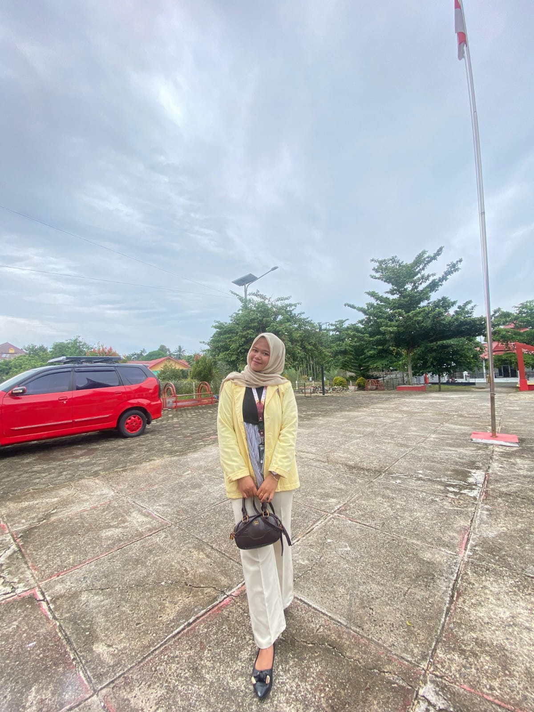
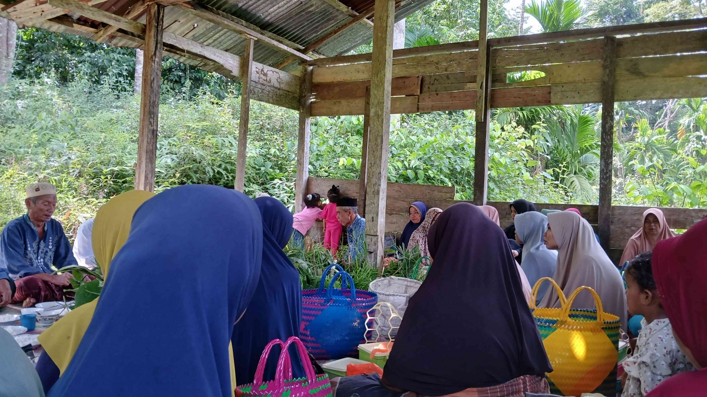

Dosen Pengampu

Mansurdin, S.Sn, M.Hum
Mahasiswa

Wita Anggelina
Nim 23354030
Tugas • MataKuliah
Adat Istiadat Kenduri di Desa Lubuk Pungguk, Kecamatan Jangkat, Kabupaten Merangin, Provinsi Jambi
Adat istiadat kenduri di Desa Lubuk Pungguk merupakan bagian integral dari tradisi adat Jangkat yang kaya, berfungsi untuk mempererat silaturahmi, mengungkapkan rasa syukur, dan melestarikan budaya.
Proses Acara Adat Istiadat Keduri
Galeri ini berisi dokumentasi acara adat istiadat Keduri


Materi Pembelajaran
Adat Istiadat Keduri
-
Pembahasan Keduri
-
Kenduri merupakan tradisi penting yang masih dijaga oleh masyarakat Desa Lubuk Pungguk. Tradisi ini tidak hanya menjadi bentuk ungkapan syukur, tetapi juga menjadi simbol kebersamaan, persaudaraan, serta penghormatan terhadap adat dan ajaran agama.
Di Desa Lubuk Pungguk, kenduri dilakukan dalam berbagai keadaan, seperti kenduri naik rumah sebagai tanda syukur menempati rumah baru, kenduri panen untuk merayakan hasil pertanian, kenduri selamatan untuk acara seperti pernikahan, khitanan, atau kelahiran, serta kenduri tolak bala untuk memohon perlindungan dari mara bahaya. Kenduri dalam rangka hari-hari besar Islam seperti malam 1 Muharram atau Maulid Nabi juga kerap dilaksanakan.
Persiapan kenduri dilakukan dengan semangat gotong royong. Warga saling membantu mempersiapkan segala keperluan, mulai dari memasak, menata tempat, hingga mengumpulkan bahan makanan. Musyawarah antara keluarga dan tetua adat dilakukan untuk menentukan hari pelaksanaan dan susunan acaranya. Bahan makanan seperti beras, ayam kampung, atau hasil kebun biasanya diperoleh melalui sumbangan sukarela dari warga sekitar.
Pelaksanaan kenduri dimulai dengan pembacaan doa yang dipimpin oleh tokoh agama atau lebai. Doa berisi ungkapan rasa syukur dan permohonan keselamatan bagi seluruh peserta acara. Dalam beberapa kegiatan, dilanjutkan dengan pembacaan Surah Yasin, tahlilan, dan doa selamat sebagai wujud perpaduan adat Melayu Jambi dengan nilai-nilai Islam.
Makanan menjadi bagian penting dari kenduri. Hidangan yang disajikan biasanya berupa gulai ayam kampung, nasi putih atau nasi kunyit, serta berbagai makanan tradisional seperti lemang, wajik, dan kue-kue khas desa. Penyajian makanan dilakukan secara bersama-sama atau makan bajamba, yaitu makan dalam satu dulang sebagai lambang kebersamaan tanpa memandang perbedaan status sosial.
Pada momen kenduri, tetua adat juga menyampaikan petuah yang berisi nasihat mengenai sopan santun, pentingnya menjaga persaudaraan, serta ajakan untuk terus bersyukur kepada Tuhan. Petuah ini menjadi pengingat bagi masyarakat, terutama generasi muda, agar tetap melestarikan nilai-nilai adat.
Tradisi kenduri di Desa Lubuk Pungguk sarat dengan nilai gotong royong, kebersamaan, religiusitas, serta pelestarian adat istiadat. Meski zaman terus berkembang, masyarakat masih mempertahankan tradisi ini. Perubahan hanya terlihat pada penggunaan peralatan modern dan penyederhanaan acara, namun nilai inti dari kenduri tetap dijaga dan diwariskan.